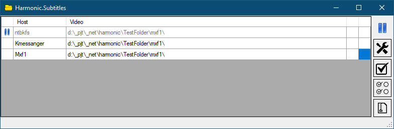

List of hosts

On the list of hosts, right click calls the menu, double click for
edit
the selected host.
Switching the checking by timer - right click on
- Starts checking all hosts from the list (without a pause sign)
- Starts checking the current host.
- Calls the
settings
.
- For the current host, starts archiving subtitles that are not associated with the video files.


 - Starts checking all hosts from the list (without a pause sign)
- Starts checking all hosts from the list (without a pause sign) - Starts checking the current host.
- Starts checking the current host. - Calls the settings.
- Calls the settings. - For the current host, starts archiving subtitles that are not associated with the video files.
- For the current host, starts archiving subtitles that are not associated with the video files.